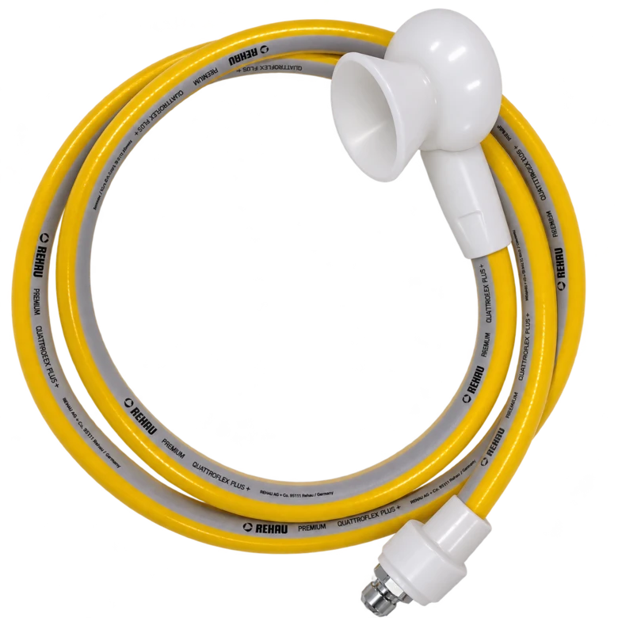

Водолечение и бальнеотерапия
Водные процедуры для мышечного расслабления, восстановления после нагрузок и общего оздоровления организма.



Гидромассажная ванна и добавки45 мин5 100 ₽
Суть метода
Подводный душ-массаж — сочетание тёплой ванны и направленного массажного воздействия водяной струёй. С помощью специального шланга и сменных насадок специалист регулирует силу, направление и характер воздействия на различные группы мышц.
В отличие от обычной гидромассажной ванны с неподвижными форсунками, такая технология позволяет индивидуально прорабатывать выбранные участки тела.
Для чего применяется
Для снятия мышечного напряжения, уменьшения скованности, восстановления после физических нагрузок, поддержки местного кровообращения и общего расслабления.
Вода одновременно выполняет две функции: поддерживает тело, уменьшая нагрузку на опорно-двигательный аппарат, и служит инструментом механического воздействия на мышцы и мягкие ткани.
Как представить гостю
«Гидромассаж сочетает тёплую воду и массажное воздействие. В отличие от обычной ванны, здесь специалист направляет водяную струю на выбранные участки тела. Процедура помогает расслабить напряжённые мышцы, уменьшить скованность и восстановиться после нагрузок. Зону и интенсивность специалист подбирает с учётом вашего состояния. При желании можно обсудить дополнительные компоненты ванны».
Дополнительные компоненты ванны
- Прованские травыАроматическое сопровождение и расслабление
- 1 100 ₽
- КальцийМинеральная добавка
- 1 100 ₽
- МагнийМинеральная добавка
- 1 100 ₽
- Морская сольМинеральное обогащение воды
- 1 100 ₽
- «Живая вода»Специально подготовленная вода
- 1 600 ₽
- «Талассо Магнезиум»Концентрат (масло) морского магния, 500 мл; 5 мин по прайсу
- 7 000 ₽
Дополнительные компоненты подбираются с учётом выбранной программы и индивидуальной переносимости. Наличие минеральных веществ в воде само по себе не означает доказанного восполнения их дефицита в организме через кожу.
Подводный вакуумный массаж10 мин1 100 ₽
Суть метода
Подводный вакуумный массаж — технология механического воздействия на кожу и подкожные ткани с помощью специальной насадки, создающей область пониженного давления.
В отличие от классического гидромассажа, при котором струя воды оказывает давление на ткани снаружи, вакуумная насадка мягко втягивает их внутрь, обеспечивая другой характер массажного воздействия.
Процедура проводится в водной среде, сочетая свойства вакуумного массажа с тепловым воздействием воды.
Для чего применяется
- Локальная проработка кожи и подкожных тканей.
- Воздействие на подвижность и эластичность мягких тканей.
- Эстетические программы ухода за телом.
- Работа с отдельными косметическими проявлениями целлюлита; стойкий эффект не гарантирован.
- Дополнение программ гидромассажа.
Производитель Grand Cryo разработал собственную конструкцию насадки для проведения подводного вакуумного массажа. Исследования вакуумного массажа в целом показывают потенциальное влияние на механические свойства кожи, однако доказательная база непосредственно подводного варианта ограничена.
Как представить гостю
«Подводный вакуумный массаж — дополнительный вариант массажа в воде. Специалист работает специальной вакуумной насадкой, которая мягко втягивает ткани, в отличие от направленной водяной струи. Процедуру можно рассмотреть для локальной проработки мягких тканей и эстетического ухода за телом. Специалист уточнит зону воздействия и возможность сочетания с вашей водной процедурой».
Ванна с водородом4 700 ₽
Суть метода
Водородная ванна — оздоровительная водная процедура с использованием «Живой воды», обогащённой растворённым молекулярным водородом (H₂). Молекулярный водород представляет собой газ, молекула которого состоит из двух атомов. В отличие от атомарного водорода (H), молекулярный водород является устойчивой химической формой. Название услуги в официальном прайсе сохранено в исходном документе; в физиологическом объяснении употребляется корректное обозначение H₂.
Исследовательский интерес к молекулярному водороду связан с его малым размером и возможным влиянием на процессы окислительного стресса — нарушения баланса между образованием реакционноспособных соединений и защитными механизмами клеток. В небольших исследованиях водородных ванн изучались периферическое кровообращение, сохранение тепла после ванны и состояние кожи. Эти данные пока не позволяют утверждать, что ванна обеспечивает системное антиоксидантное лечение, нормализует функцию митохондрий (структур клеток, участвующих в выработке энергии) или предотвращает заболевания.
Для чего применяется
- Восстановление после нагрузок и отдых при мышечном напряжении, дискомфорте в спине и суставах.
- Поддержка местного кровообращения и теплового комфорта.
- Расслабление при переутомлении, эмоциональном напряжении и жалобах на качество сна.
- Уход за кожей и дополнение эстетических программ.
- Работа с ощущением тяжести и отёчностью конечностей — после медицинской оценки её причины.
Когда необходим индивидуальный подбор
В исходном материале клиники перечислены заболевания опорно-двигательного аппарата, отёки, хроническая усталость, стресс и депрессия, головные боли и мигрень, нарушение сна, частые простуды и вирусные заболевания, снижение иммунной защиты, избыточный вес, целлюлит и заболевания ЛОР-органов (уха, горла, носа). Эти состояния являются поводом обсудить индивидуальную программу с врачом, а не самостоятельными доказанными показаниями к водородной ванне. При острых инфекциях и обострениях процедура откладывается. Ванна не заменяет лечение депрессии, мигрени, инфекций или других заболеваний и не является самостоятельным способом снижения жировой массы.
Как представить гостю
«Водородная ванна — это тёплая ванна со специально подготовленной водой, содержащей растворённый водород. Её выбирают для спокойного восстановительного отдыха, расслабления и ухода за кожей. Водородные ванны также изучаются в связи с их влиянием на местное кровообращение и сохранение тепла после процедуры. Если у вас есть конкретные жалобы или хронические заболевания, врач подберёт подходящую программу».
Противопоказания и ограничения
Не записывать без медицинской оценки при активном воспалительном или инфекционном заболевании, обострении кожного заболевания, наличии новообразований, тромбофлебите или других тромботических состояниях. При лихорадке, остром тромбозе, нестабильном сердечно-сосудистом состоянии и острых заболеваниях процедуру отложить. Не считать любое новообразование или перенесённый тромбоз автоматически пожизненным противопоказанием: решение принимает врач по диагнозу и актуальному состоянию. Учитываются также общие ограничения водолечения и индивидуальные особенности гостя.
Ванна Клеопатры7 000 ₽
Суть метода
Ванна Клеопатры — специализированная водная процедура, основанная на воздействии углекислого газа (CO₂) без инъекционного введения. Такой подход называют безинъекционной карбокситерапией.
Согласно описанию процедуры в нашей клинике, вода обогащается двумя газами — углекислым газом и молекулярным водородом.
Углекислый газ при контакте с кожей способствует расширению мелких кровеносных сосудов и изменению местного кровотока. В этом заключается один из основных физиологических принципов углекислых ванн.
Для чего применяется
- Стимуляция микроциркуляции — кровообращения в мельчайших сосудах.
- Поддержка местного кровоснабжения кожи.
- Эстетические программы ухода за телом.
- Создание условий для мышечного и психоэмоционального расслабления.
Углекислые ванны имеют собственную научную историю. В сравнительных исследованиях установлено, что вода, обогащённая углекислым газом, способна усиливать кожный кровоток по сравнению с обычной водой такой же температуры. Это не подтверждает автоматически преимущества сочетания двух газов в конкретной ванне.
Как представить гостю
«Ванна Клеопатры — особая водная процедура с углекислым газом, без инъекций. По описанию клиники, вода содержит также молекулярный водород. Углекислый газ способствует расширению мелких сосудов кожи, поэтому такую ванну рассматривают в программах ухода за телом и местного кровообращения. Подходящий режим определит медицинский специалист».
Лечебный гидромассаж в «Живой воде»60 мин6 300 ₽
Суть метода
Эта процедура объединяет два направления водолечения: индивидуальный подводный душ-массаж и использование воды, подготовленной с помощью специальной электрохимической технологии.
При электролизе — обработке воды электрическим током — могут изменяться её физико-химические характеристики: кислотно-щелочные свойства, содержание растворённых газов и окислительно-восстановительный потенциал.
Окислительно-восстановительный потенциал (ОВП) — показатель, характеризующий способность среды участвовать в химических реакциях передачи электронов. Он описывает свойства воды, а не степень оздоровления организма.
Для чего применяется
Лечебный гидромассаж в «Живой воде» объединяет два компонента: индивидуальный подводный душ-массаж и специально подготовленную воду, обогащённую молекулярным водородом. Основное физическое воздействие обеспечивают тепло, гидростатическое давление и направленный массаж.
- Уменьшение мышечного напряжения, скованности и дискомфорта в области позвоночника и суставов.
- Поддержка местного кровообращения и микроциркуляции — кровотока в мельчайших сосудах тканей.
- Восстановление после физической нагрузки, расслабление при переутомлении и стрессе.
- Дополнение программ работы с отёчностью и состоянием мягких тканей при установленной причине отёка.
- Эстетический уход за кожей и телом; не самостоятельное лечение избыточного веса.
Влияние водорода на окислительный стресс, клеточный обмен и состояние кожи является предметом исследований. Доказательств системного лечения заболеваний, повышения иммунитета, профилактики опухолей или уменьшения жировой массы именно этой процедурой недостаточно.
Как представить гостю
«Лечебный гидромассаж в „Живой воде“ сочетает индивидуальную проработку мышц направленной водяной струёй со специально подготовленной водородной водой. Это хороший формат восстановительного отдыха после физической нагрузки, при мышечном напряжении и скованности. Специалист подбирает интенсивность и зоны массажа с учётом вашего состояния. При хронических заболеваниях возможность включения процедуры в программу уточняет врач».
Противопоказания и ограничения
Применяются ограничения, приведённые в разделе «Ванна с водородом», а также дополнительные ограничения к направленному массажному воздействию: свежая травма, незажившие ткани после операции, болезненные или повреждённые участки кожи, подозрение на тромбоз, активное кровотечение. При онкологических заболеваниях, склонности к кровоподтёкам и приёме препаратов, влияющих на свёртывание крови, необходима индивидуальная медицинская оценка. Не проводить массаж при остром состоянии.
Чем отличается от обычной водородной ванны?
Водородная ванна представляет собой преимущественно пассивную водную процедуру. Лечебный гидромассаж в «Живой воде» дополнительно включает целенаправленное механическое воздействие водяной струёй, которое специалист подбирает в соответствии с индивидуальной задачей.
Пантовая ванна «Целебная сила Алтая»15 мин6 900 ₽
Суть метода
Пантовые ванны — традиционное направление алтайской бальнеотерапии, основанное на применении специально приготовленных составов из пантового сырья. Они сочетают физические свойства тёплой воды с использованием биологически сложного природного компонента. В клинике процедура относится к восстановительному и оздоровительному отдыху. Индивидуальную медицинскую цель определяет врач.
Что такое панты марала
Панты — молодые, ещё не окостеневшие рога оленя. У алтайского марала они формируются в период ежегодного роста рогов. В это время рог представляет собой живую, активно растущую ткань, снабжённую кровеносными сосудами, содержащую хрящевую, костную и соединительную ткани. Именно способность пантов быстро расти и перестраиваться вызывает научный интерес к их биохимическому составу.
На Алтае пантовые процедуры традиционно связаны с мараловодством. В курортной практике применяют как приготовленные из пантов водные составы, так и различные готовые концентраты. Их состав и свойства не обязательно одинаковы.
Биологический состав пантового сырья
- Факторы роста. В пантовой ткани исследуются инсулиноподобный фактор роста (IGF-1), эпидермальный фактор роста (EGF), трансформирующий фактор роста (TGF-β), нейротрофические факторы, включая фактор роста нервов (NGF), и костные морфогенетические белки (BMP). Эти сигнальные молекулы участвуют в регуляции роста, специализации и восстановления клеток и тканей. Их наличие в растущей ткани не означает, что они содержатся в готовой ванне в активной концентрации или поступают в организм через кожу.
- Структурные компоненты. Коллаген, в том числе типов I и II, и другие компоненты соединительной ткани, включая гликозаминогликаны. Коллаген участвует в формировании структуры кожи, костей и хрящей; гликозаминогликаны связывают воду и входят в состав межклеточного вещества. Эластин в исходном справочнике указан как структурный белок; содержание в конкретном экстракте требует подтверждения.
- Регуляторные соединения. В исходном описании Натальи упомянуты гиалуроновая кислота, эритропоэтин и простагландины. Гиалуроновая кислота удерживает воду в тканях; эритропоэтин участвует в регуляции образования эритроцитов; простагландины регулируют локальные физиологические реакции. Наличие и активность этих веществ именно в используемом концентрате следует подтверждать документами на состав. Не приписывать ванне действие этих веществ как лекарственных препаратов.
- Макро- и микроэлементы. Кальций, магний, фосфор, железо, цинк, марганец, кобальт и другие элементы могут входить в состав пантового сырья. Они участвуют в различных процессах минерального обмена и жизнедеятельности клеток. Содержание в конкретном экстракте зависит от сырья и технологии приготовления.
- Аминокислоты и пептиды. В пантовом сырье изучаются аминокислоты, в том числе незаменимые (например, лизин, треонин, метионин, триптофан), и пептиды — короткие цепочки аминокислот. Аминокислоты являются строительными компонентами белков.
Как действует пантовая ванна
Комфортная температура воды способствует расслаблению мышц и расширению поверхностных сосудов; погружение уменьшает механическую нагрузку на тело. Пантовый компонент придаёт процедуре характер традиционной алтайской бальнеотерапии.
Тёплая вода увлажняет наружный слой кожи, но не превращает кожный барьер в свободно проницаемую мембрану. Проникновение крупных белков, факторов роста и коллагена из ванны в кровоток и лимфатическую систему в биологически значимом количестве не подтверждено. Биологические свойства пантового сырья и результаты лабораторных исследований нельзя автоматически переносить на эффект готовой ванны. Не заявлять преимущество биодоступности перед приёмом внутрь. В исходном материале указан ориентир 36–38 °C; это не подтверждённый протокол данной клиники. Температура и время процедуры определяются врачом по инструкции конкретного состава.
Для чего применяется
Пантовые ванны традиционно включаются в курортные программы восстановительного отдыха. Ниже — направления, сохранённые из материала Натальи с разграничением оздоровительных задач и медицинских состояний, требующих врачебной оценки. Это не перечень доказанных лечебных показаний конкретного концентрата.
- Опорно-двигательный аппарат. Мышечное напряжение, скованность и дискомфорт после нагрузки; при артрозе, остеохондрозе, последствиях переломов и операций — только в согласованной программе восстановления. Не обещать восстановление хряща за счёт проникновения коллагена через кожу.
- Нервная система и отдых. Переутомление, стресс, жалобы на качество сна, хроническая усталость. Комфортная ванна способствует расслаблению; доказанного изменения серотонина и кортизола за счёт пантовых белков не установлено.
- Сердечно-сосудистое направление. При жалобах на тяжесть в конечностях, нарушениях микроциркуляции, венозной недостаточности, повышенном или пониженном давлении выбор процедуры зависит от медицинского состояния. Тепловое воздействие влияет на сосудистый тонус; не обещать нормализацию артериального давления.
- Обмен веществ и эндокринное здоровье. При избыточном весе, анемии, сниженной функции щитовидной железы и иных гормональных нарушениях ванна может обсуждаться только как часть общего восстановительного отдыха при разрешении врача. Она не заменяет специфическое лечение и не имеет подтверждённого эффекта на кроветворение или гормоны щитовидной железы.
- Женское здоровье и эстетический уход. В исходной курортной практике пантовые процедуры рассматриваются в программах отдыха женщин, в том числе при жалобах в климактерическом периоде и запросах на состояние кожи и волос. Нарушения цикла, эндометриоз и гормонозависимые заболевания требуют отдельной оценки. Не обещать нормализацию эстрогенов или косметический результат за определённое число сеансов.
- Мужское здоровье. В исходном материале указаны снижение выносливости, либидо, тестостерона, эректильная дисфункция и нарушения сперматогенеза. Такие жалобы требуют консультации врача; ванна не является доказанным способом лечения этих нарушений или повышения тестостерона.
- Восстановление после травм, операций и интенсивной физической активности. Оздоровительная процедура может дополнять отдых и реабилитацию после разрешения врача, с учётом сроков заживления. Не обещать ускоренное сращение костей или заживление тканей.
- Восстановление после заболеваний. После перенесённой инфекции и завершения острого периода ванна может рассматриваться как часть восстановительного отдыха. Частые инфекции и подозрение на нарушение иммунной защиты требуют медицинской оценки; доказанной профилактики ОРВИ или стимуляции иммунитета посредством конкретной ванны нет.
Как представить гостю
«Пантовая ванна „Целебная сила Алтая“ — одна из традиционных оздоровительных процедур нашего региона. В тёплую воду добавляется специальный состав на основе пантового сырья алтайского марала. Панты — молодые растущие рога, которые отличаются сложным биологическим составом. Такая ванна сочетает комфортное тепло, расслабление и традиции алтайского оздоровления. Её выбирают для восстановительного отдыха после нагрузок и переутомления. Перед курсом врач-физиотерапевт оценивает ваше состояние и подбирает подходящие параметры».
Противопоказания к пантовым ваннам
Когда процедуру не проводят до медицинской оценки или устранения острого состояния:
- Острые воспалительные и инфекционные заболевания, лихорадка, в том числе острые респираторные вирусные инфекции (ОРВИ).
- Гипертонический криз, неконтролируемая артериальная гипертензия, декомпенсированная сердечная недостаточность, клинически значимые нарушения ритма и проводимости сердца.
- Острый тромбоз, тромбофлебит, тромбоэмболия.
- Активный туберкулёз.
- Активное кровотечение, тяжёлые нарушения свёртывания крови.
- Известная индивидуальная непереносимость используемого пантового состава, в том числе его белковых компонентов.
- Активные кожные поражения, при которых погружение в ванну не разрешено врачом.
Состояния, требующие предварительной консультации врача и проверки инструкции конкретного состава:
- Злокачественные новообразования, в том числе гормонозависимые, доброкачественные опухоли с риском роста; онкологический анамнез.
- Гипертоническая болезнь любой стадии, в особенности II–III; перенесённые сердечно-сосудистые события, аритмии и нарушения проводимости.
- Тромбофлебит или тромбоэмболия в анамнезе, выраженное варикозное расширение вен нижних конечностей (III–IV степень по исходному описанию; классификацию уточняет врач).
- Системные заболевания крови, включая гемофилию и тромбоцитопению.
- Эпилепсия и судорожный синдром.
- Беременность и грудное вскармливание.
- Хроническая почечная или печёночная недостаточность, даже в компенсированном состоянии.
- Сахарный диабет — необходимость контроля гликемии (уровня глюкозы крови) определяет врач.
- Кожные заболевания в стадии обострения и нарушения целостности кожи.
Особенности для женщин. Менструация, эндометриоз III–IV степени, гормонозависимые опухоли репродуктивной системы — отдельные ограничения, указанные в исходном справочнике Натальи. При наличии этих состояний не записывать на пантовую ванну до согласования с врачом. При кровотечении или остром состоянии процедуру отложить.
Особенности для мужчин. При аденоме предстательной железы II–III стадии, как указано в исходном материале, необходима предварительная консультация уролога и решение лечащего врача.
Перед записью на курс проводится консультация врача-физиотерапевта. Специалист оценивает состояние гостя, противопоказания, состав ванны и оптимальные параметры процедуры. Списки выше являются правилами медицинской маршрутизации, а не основанием для самостоятельного назначения администратором. Разграничение абсолютных и относительных противопоказаний и конкретные числовые пороги должны соответствовать утверждённой инструкции концентрата и протоколу клиники; не считать все хронические состояния пожизненными абсолютными запретами.
Водолечение
В курортной и восстановительной медицине лечебные ванны и подводный массаж применяют для уменьшения мышечного напряжения и скованности, а также для восстановления после физических нагрузок.
В основе процедуры лежит сочетание нескольких природных факторов: температуры воды, её выталкивающей силы, давления на поверхность тела и направленного массажного воздействия.
В тёплой воде снижается механическая нагрузка на позвоночник и суставы, расслабляются мышцы. Специальные насадки позволяют специалисту целенаправленно воздействовать на отдельные участки тела, регулируя силу водяной струи или вакуумного массажа.
Дополнительные возможности открывает бальнеотерапия — применение минеральных вод и лечебных ванн. В нашем направлении водолечения используются также растительные, газовые и другие специально подготовленные компоненты.
В нашей клинике представлены различные программы водолечения — от классического гидромассажа до специализированных водородных и традиционных алтайских пантовых ванн.
Для чего применяется
Снятие мышечного напряжения
Тепло и направленное воздействие водяных струй создают условия для расслабления напряжённых мышц, уменьшения скованности и дискомфорта после длительных статических и физических нагрузок.
Активизация местного кровообращения
Под воздействием тепла поверхностные кровеносные сосуды расширяются. В сочетании с массажем это способствует изменению кровотока в коже и мягких тканях.
Разгрузка позвоночника и суставов
Выталкивающая сила воды уменьшает нагрузку, которую испытывает опорно-двигательный аппарат. Это позволяет мышцам и суставам отдыхать в условиях частичной механической разгрузки.
Поддержка венозного оттока и уменьшение отёчности
Давление окружающей воды способствует перераспределению жидкости и венозному возврату. При правильно подобранной процедуре это может помочь уменьшить ощущение тяжести и отёчности конечностей, если их причина допускает такое воздействие.
Восстановление после физических нагрузок
Водные процедуры могут дополнять программы восстановления после тренировок, продолжительных прогулок, горнолыжных нагрузок и активного отдыха, помогая уменьшить субъективное ощущение мышечной усталости.
Уход за кожей и мягкими тканями
Гидромассаж, вакуумные технологии и специальные компоненты ванн используются в программах эстетического ухода, направленных на улучшение внешнего вида кожи и уменьшение выраженности отдельных косметических проявлений.
Психоэмоциональное восстановление
Комфортная температура воды, воздействие на кожные рецепторы и состояние физической разгрузки создают благоприятные условия для снижения нервного напряжения, глубокого отдыха и расслабления.
Исследования водных методов восстановления наиболее убедительно раскрывают их возможности в отношении отдельных болевых синдромов и функционального состояния опорно-двигательного аппарата. При этом результаты разных видов водолечения не всегда взаимозаменяемы.
Физиологические механизмы
Термическое воздействие
Тёплая вода влияет на тонус поверхностных сосудов, способствует расслаблению мышц и уменьшению ощущения скованности.
Гидростатическое давление
Окружающая тело вода оказывает давление на погружённые ткани: чем глубже находится участок тела, тем выше давление. Это влияет на распределение жидкости и венозный возврат — движение крови по венам к сердцу.
Выталкивающая сила воды
Вода поддерживает тело и уменьшает его кажущийся вес, благодаря чему снижается механическая нагрузка на позвоночник и суставы.
Механическое воздействие
Направленные струи и вакуумные насадки позволяют специалисту избирательно воздействовать на мягкие ткани.
Химический состав воды
Растворённые газы, соли и специальные компоненты определяют дополнительные особенности отдельных программ бальнеотерапии.
Сенсорное воздействие
Тепло, прикосновение воды и ритмичное массажное воздействие создают условия для снижения нервного напряжения.
Как проходит процедура
Перед началом специалист уточняет выбранную программу, состояние гостя и индивидуальную задачу процедуры.
Гость комфортно располагается в ванне. В зависимости от выбранного вида водолечения специалист подбирает температуру воды, дополнительные компоненты, зоны и интенсивность массажного воздействия.
При гидромассаже специалист направляет водяную струю на выбранные участки тела. При вакуумном массаже используется специальная насадка. В специализированных ваннах основное воздействие связано с температурой и составом воды.
После завершения процедуры рекомендуется спокойно выйти из ванны и некоторое время отдохнуть.
Подготовка
Специальной сложной подготовки не требуется. Перед процедурой необходимо сообщить специалисту о хронических заболеваниях, аллергических реакциях, недавних травмах и операциях.
Не рекомендуется посещать ванну сразу после обильного приёма пищи, употребления алкоголя или при плохом самочувствии.
Ограничения и противопоказания
Необходимо учитывать температуру воды, воздействие гидростатического давления, интенсивность массажа и состав дополнительных компонентов.
Особого внимания требуют острые воспалительные и инфекционные заболевания, лихорадка, нестабильные сердечно-сосудистые состояния, острые тромбозы, активные кровотечения, повреждения кожи и индивидуальная непереносимость компонентов ванны.
Для вакуумного массажа, углекислых и пантовых ванн предусмотрены дополнительные ограничения. При склонности к кровоподтёкам или приёме препаратов, снижающих свёртываемость крови, вакуумное воздействие требует отдельной оценки. Возможность проведения конкретной процедуры определяет медицинский специалист согласно инструкции оборудования, применяемого состава и состоянию гостя.
При головокружении, сердцебиении, одышке, боли или другом дискомфорте следует незамедлительно сообщить специалисту.
Частые вопросы
Чем профессиональный гидромассаж отличается от джакузи?
При профессиональном подводном массаже специалист регулирует направление и интенсивность струи, индивидуально воздействуя на определённые группы мышц и участки тела.
Какую ванну лучше выбрать после активного отдыха?
Для расслабления мышц после прогулок, тренировок и горнолыжных нагрузок можно рассмотреть классический гидромассаж при отсутствии противопоказаний. Выбор дополнительных компонентов зависит от индивидуальных предпочтений и рекомендаций специалиста.
Можно ли сочетать гидромассаж с вакуумным массажем?
Такая техническая возможность предусмотрена оборудованием. Необходимость дополнительного воздействия определяется индивидуально.
Чем отличаются ванна с водородом и ванна Клеопатры?
Основное отличие — газовый состав воды. В водородной ванне акцент сделан на водороде, а в ванне Клеопатры, согласно описанию клиники, используется сочетание углекислого газа и водорода.
Можно ли приобрести дополнительные компоненты для гидромассажа?
Да. В прейскуранте представлены минеральные и растительные добавки, специальные концентраты и подготовленная «Живая вода». Цены указаны внутри раздела гидромассажной ванны.
Можно ли похудеть с помощью гидромассажа?
Гидромассаж может дополнять эстетические программы и влиять на временную отёчность тканей, но сам по себе не является методом снижения жировой массы тела.
Научное обоснование
Водолечение и бальнеотерапия имеют многолетнюю историю применения в курортной и восстановительной медицине. Современные исследования изучают влияние водной среды, температурного воздействия, массажа и дополнительных компонентов на состояние организма.
Научные исследования и публикации
2026 — Влияние водных процедур на болевые ощущения
Систематический обзор и метаанализ Effects of water immersion therapy on pain посвящён оценке водной иммерсии (погружения в воду) как способа уменьшения боли. Результаты относятся к изучавшимся видам водных процедур и не являются доказательством эффективности каждой программы нашего курорта.
2020 — Бальнеотерапия и курортная медицина
Kamioka и соавторы обобщили систематические обзоры рандомизированных исследований бальнеотерапии и курортной терапии. В частности, изучались боль и функциональные ограничения. Методики и качество исследований различались, поэтому выводы нельзя автоматически переносить на все специальные добавки и ванны.
2016 — Физиологические эффекты вакуумного массажа
Moortgat и соавторы рассмотрели исследования влияния вакуумного воздействия на свойства различных слоёв кожи. Данные о подводном вакуумном массаже и долговременном косметическом результате ограничены.
2021 — Водородные ванны и терморегуляция
В исследовании с участием 24 здоровых добровольцев сравнивали сохранение тепла после водородной и обычной ванны при одинаковой температуре и длительности. В отдельных областях тела после водородной ванны тепло сохранялось дольше. Это небольшое физиологическое исследование, не доказательство системного омоложения или лечения заболеваний.
2018 — Углекислые ванны и местное кровообращение
В сравнительном исследовании изучались реакции кровообращения кожи и мышц при погружении ног в умеренно тёплую обычную и обогащённую углекислым газом воду. Работа подтверждает физиологическую значимость углекислого газа для местного кровотока, но не устанавливает эффективность конкретной комбинированной ванны.
2022 — Электрохимически подготовленная вода
Обзор LeBaron и соавторов рассматривает свойства воды, получаемой электролизом, растворённый молекулярный водород и интерпретацию окислительно-восстановительного потенциала. Он помогает разобраться в терминологии, но не является независимым клиническим испытанием ванны Grand Cryo или доказательством системного воздействия при купании.
Пантовые ванны
Биологические свойства пантового сырья и традиции его применения не заменяют клинические исследования готовой процедуры. Для пантовых ванн в данной редакции нет подтверждённого независимого исследования конкретного используемого состава. Не заявлять доказанное проникновение факторов роста через кожу, восстановление органов или лечение заболеваний.
Вывод. Общие физические эффекты водной среды и отдельные эффекты специальных методик изучены, но их выраженность и клиническая значимость зависят от режима, состояния человека и конкретного состава воды. Результаты одной технологии нельзя приписывать другой.
2026 — Биохимия пантового сырья
Обзор Deer antler velvet as a multifunctional natural resource for biomedical and nutraceutical applications. Описаны белки, факторы роста, пептиды и другие компоненты; подчёркиваются различия между экспериментальными данными и клинически подтверждёнными эффектами, проблемы стандартизации и биодоступности.
2019 — Доставка белков пантового экстракта через кожу
Исследование специального крема с микроструктурами морской губки для доставки белков и факторов роста. Оно показывает, почему нельзя считать обычную пантовую ванну доказанным способом системной доставки этих веществ.
2022 — Кожный барьер и трансдермальная доставка
Обзор объясняет ограничения проникновения крупных гидрофильных молекул, белков и пептидов через неповреждённую кожу.
2018 — Водородная вода и капиллярный кровоток
Небольшое исследование местного воздействия тёплой воды с молекулярным водородом; изучались капиллярный кровоток и показатели кожи. Не является доказательством лечения хронических заболеваний.
Курортная практика Алтая
Официальное описание пантолечения санатория «Алтай-Вест» иллюстрирует традиционные направления курортного применения и необходимость медицинского отбора. Это описание практики, а не независимое клиническое испытание и не инструкция к нашему составу.